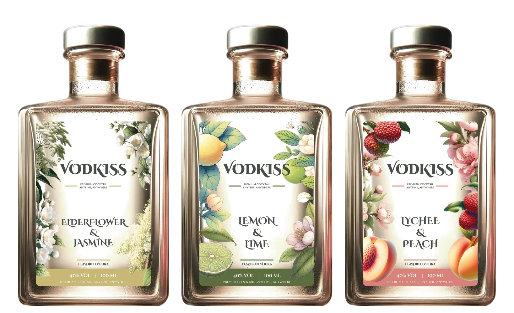
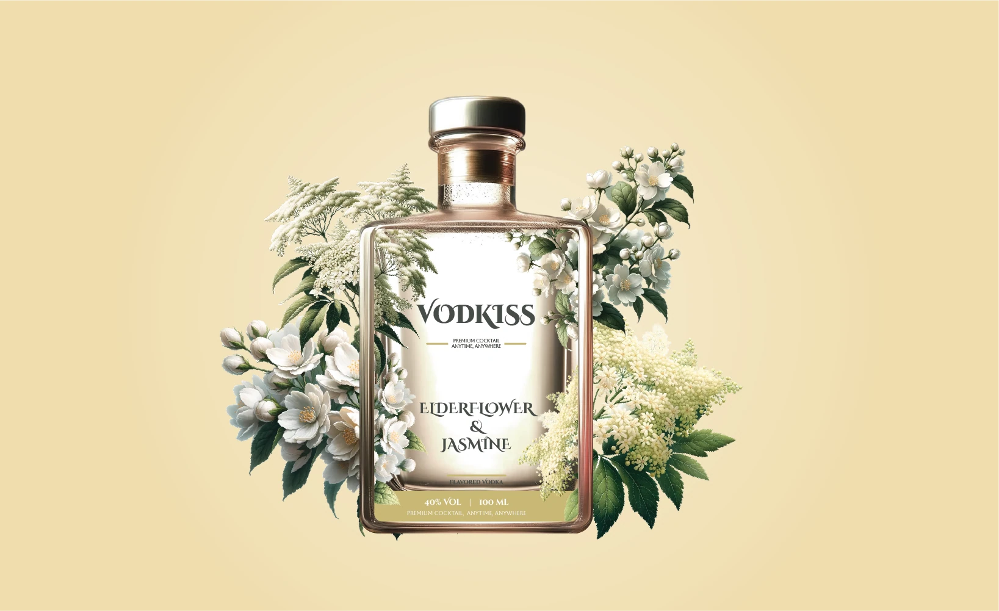
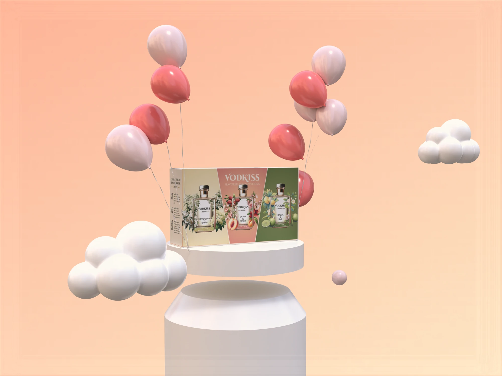
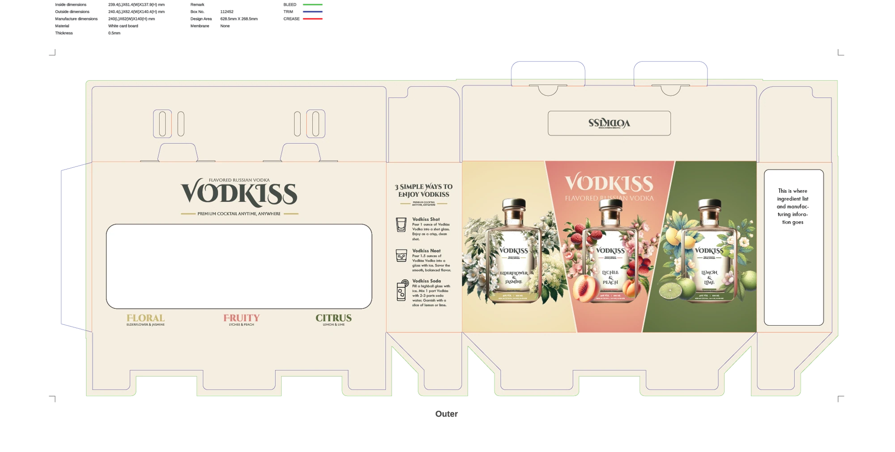
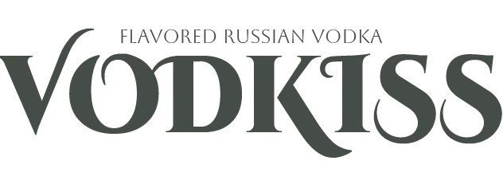
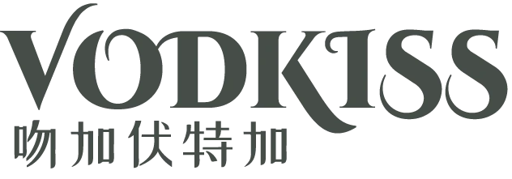

Spirits · Identity & packaging
A little bottle.
A whole occasion.
Bilingual identity and packaging, from first impression to the final label.

Vodkiss
Spirits · Identity & packaging
- Visual identity
- Bilingual packaging
- Label design
A small format.
A complete identity.
Goal
Give a portable cocktail range a distinctive, coherent identity.
Solution
Connect bilingual lettering, botanical illustration and practical packaging across the range.
Botanical detail. Considered form.
Character
Decorative lettering with presence.
Flavour
A colour for each expression.
Consistency
One system, from label to gift set.
The palette
- Core 01#464D48 · Identity palette
- Core 02#C9B875 · Identity palette
- Core 03#5C6E3F · Identity palette
- Core 04#D8817A · Identity palette
- Core 05#708D8D · Identity palette
- Artwork ground#F1ECDB · Original identity artwork

The work


The mark


Notes
Identity and packaging archive, 2024–25. No website or app work is attributed. Production extent and individual specialist credits await confirmation.
Have a similar business problem?
Bring us the problem.
You do not need to know which service you need. Start with the problem, or run the free audit and let the evidence choose the next step.